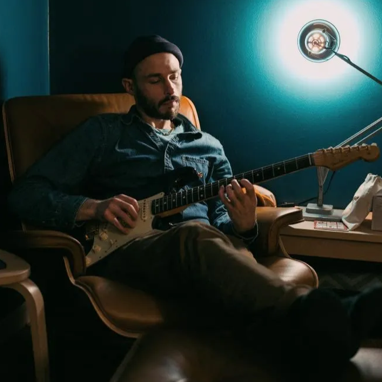
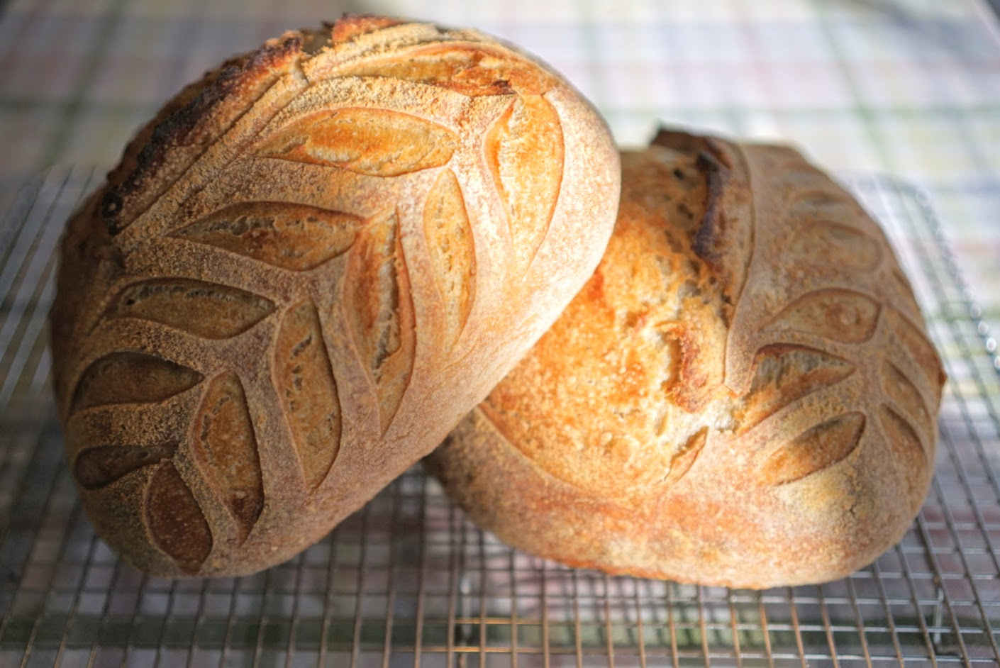

Professional:
Product Manager,
Compliance Manager,
Attorney,
Resonpsible AI and Explainable AI enthusiast
Artist:
Musician,
Baker,
Photographer
Product Management and Compliance
AI-Enthusiastic Product Manager and Licensed Attorney in Charleston, SC
Self-motivated and results-oriented professional with 6+ years of experience as a product manager, compliance manager, and project manager. Licensed attorney and technical mind passionate about applying legal skills as well as Responsible AI and Explainable AI principles to develop innovative solutions that drive compliance, growth, and efficiency. Proven ability to lead cross-functional teams, launch new offerings, and ensure compliance across complex projects. Accomplished writer, editor, and analyst with a gift for effectively communicating complex technical concepts to educate and persuade diverse audiences.

Indie Rock with a Lowcountry flare.
Known for his sweet timbre and wide vocal range, Marshall is a singer, songwriter, and guitarist in the Lowcountry.
Live Studio Take - Flies to Honey | Out of Control

About the Baker
Baking is in Marshall’s blood. Between the generations of Jewish bakers in eastern Europe and New York on his father’s side and his mother’s reputation for casually serving up 50 quiches at a house party, each side taught Marshall the magic of how baking can bring people to both delight and unite.
Marshall was originally drawn to photography by how it could enhance his other passions rather than distract him from them. As time has elapsed, photography has developed into its own passion. Marshall appreciates how the study of light provides him a creative outlet and how it allows him to capture precious moments.